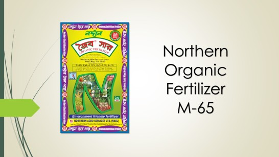

Prevent the significant
rise
of
chemical fertilizer demand
Decrease urea usage by 14%
Improve cost-effectiveness
for
farmers
Have greater chances for
commercial
success
Exclusive to Northern Agro
Services
Ltd

Farmer's benefits in using Northern
Organic
Fertilizer M-65
Special ingredients increase cost effectivity
Maintains optimal soil PH levels
Increases Effectiveness of Area
Optimized for commercial agriculture
Higher quality yield
Preserves long-term soil efficiency
Higher quality yield
Preserves long-term soil efficiency
NASL’s extensively researched Northern Organic fertilizer™ can replace the
use
of compost organic fertilizers by up to
50% while having seven-fold higher profit margin. Thus, less amount of fertilizer is required while
having
superior cost
effectiveness. As demonstrated below, nationwide use of our Northern Organic Fertilizer™ over
conventional
compost
fertilizers will save further $300 million every year for the farmers. Apart from the increase in cost
efficiency, the
use of Northern Organic™ fertilizer has further benefits in comparison to compost fertilizer. The
product is
fully
fortified and was developed keeping commercial agriculture in mind. The product has been tested to have
significant
advantages over locally found conventional compost organic fertilizers –
Extensively researched product and exclusive to Northern Agro Services Ltd.
Northern Organic™ fertilizer is the first commercially manufactured organic fertilizer in
Bangladesh.
Northern Organic™ fertilizer consists of such ingredients which makes it very effective in the
production
of high value crops, fruits and vegetables. There is no alternative to Northern Organic fertilizer
keeping in
mind the cost effectivity for commercial agriculture.
Northern Organic™ fertilizer keeps soil acidity under control which allows chemical and NPKS
fertilizer to
work better on the soil and boost production capacity.
Chemical fertilizer (also known as state fertilizers) becomes less effective on soil where they have
been
applied for a long time, hence using Northern Organic™ fertilizer in this scenario enables
farmers
to
obtain previous yields of chemical fertilizer.
Mixing Northern Organic™ fertilizer with chemical or NPKS fertilizers during final land
preparation
increases crop production.
Regular use of Northern Organic™ fertilizer decreases the need for using other chemical
fertilizers in the
soil. It also assists in increasing the efficiency of chemical fertilizers applied to the soil.
Therefore, the
quantity of chemical and NPKS fertilizer required is reduced. This will reduce foreign exchange
drain on
chemical fertilizer imports.
By properly mixing Northern Organic™ fertilizer with Urea and following the method of
top-dressing, the
Urea acts as a slow-release fertilizer which boosts the long lasting effects.